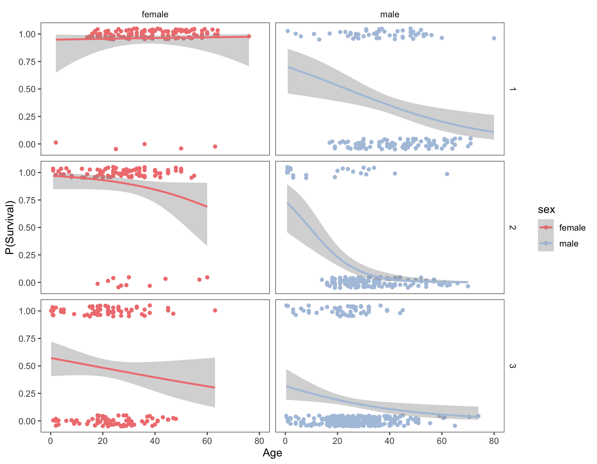
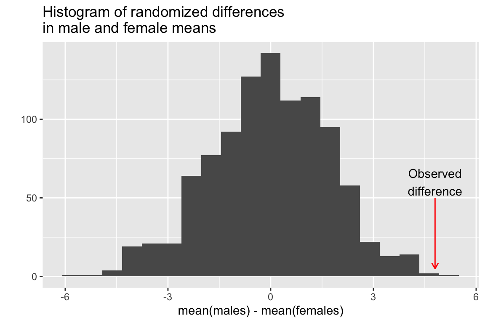
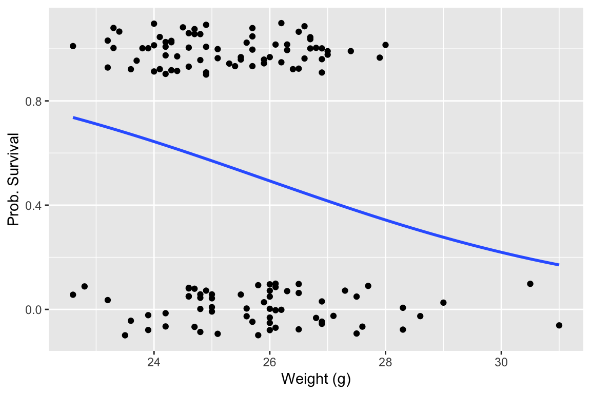

Chapter 17 Randomization, Jackknife, and Bootstrap
17.1 Libraries
library(tidyverse)
library(broom)
set.seed(20180404)17.2 Randomization
There are a number of packages (e.g. coin) that include functions for carrying out randomization/permutation tests in R. However, it’s often just as easy to write a quick set of functions to carry out such tests yourself. We’ll illustrate a simple example of this using an example from Manly (2007).
Consider the following data set composed of measures of mandible lengths (in mm) for male and female golden jackals. This set of measurements was taken from a set of skeletons in the collections of the British Museum of Natural History.
- Females: 110, 111, 107, 108, 110, 105, 107, 106, 111, 111
- Males: 120, 107, 110, 116, 114, 111, 113, 117, 114, 112
Let’s first two vectors to represent this set of measurements, and then create a data frame to hold this information:
male.mandibles <- c(120,107,110,116,114,111,113,117,114,112)
female.mandibles <- c(110,111,107,108,110,105,107,106,111,111)
jackals <- tibble(sex = c(rep("m",10),rep("f",10)),
mandible.length = c(male.mandibles,female.mandibles))And we’ll create a simple strip chart to visualize the data
ggplot(jackals, aes(x = sex, y = mandible.length, color = sex)) +
geom_jitter(width=0.1, height=0,size=2,alpha=0.75)
Having done so, let’s look at the male and female means and the difference between them:
jackals %>%
group_by(sex) %>%
summarize(mean.mandible.length = mean(mandible.length))
## # A tibble: 2 x 2
## sex mean.mandible.length
## <chr> <dbl>
## 1 f 109.
## 2 m 113.The difference in the mean mandible length is:
mean(male.mandibles) - mean(female.mandibles)
## [1] 4.817.3 Using randomization to test for a difference in means
The hypothesis we want to test is that male jackals have, on average, larger mandibles than female jackals. The strip plot we constructed and difference in the means would seem to suggest so but let’s carry out some more formal tests. The obvious way to compare this set of measurements would be to carry out a t-test, which is approropriate if the samples are normally distributed with approximately equal variance. We have small samples here, so it’s hard to know if the normal distribution holds. Instead we’ll use a randomization test to compare the observed difference in the means to the distribution of differences we would expect to observe if the labels male' andfemale’ were randomly applied to samples of equal size from the data at hand.
Let’s create a function that takes a sample and randomly assigns the observations to two groups of a specified size. The function takes as input a vector of values (size \(N\)) and two integers representing the sample sizes (\(n_1\) and \(n_2\) where \(n_1 + n_2 = N\)) of the two groups to be compared.
randomize.two.groups <- function(x, n1, n2){
# sample w/out replacement
reordered <- sample(x, length(x)) # see help(sample) for more info
g1 <- reordered[seq(1,n1)] # take the first n1 items as group 1
g2 <- reordered[seq(n1+1,n1+n2)] # take the the remaining items as group 2
list(g1,g2)
}Test out this function by calling it repeatedly as shown below. You’ll see that it returns a random reordering of the original data, split into two groups:
randomize.two.groups(jackals$mandible.length, 10, 10)
## [[1]]
## [1] 110 114 120 107 111 106 112 111 110 113
##
## [[2]]
## [1] 110 111 107 108 117 105 114 111 116 107Everytime you call this function you get a different random reordering:
randomize.two.groups(jackals$mandible.length,10,10) # call it again to get a different sample
## [[1]]
## [1] 114 117 111 110 120 107 110 107 110 108
##
## [[2]]
## [1] 111 111 116 111 112 106 107 105 114 113Now let’s write a simple function that returns the mean difference between two samples:
mean.diff <- function(x1, x2) {
mean(x1) - mean(x2)
}Now let’s write a generic randomization function:
randomization <- function(x1, x2, fxn,nsamples=100){
stats <- c() # will hold our randomized stats
orig <- c(x1,x2)
for (i in 1:nsamples){
g <- randomize.two.groups(orig, length(x1), length(x2))
stats <- c(stats, fxn(g[[1]],g[[2]]))
}
return (stats)
}We can then use the randomization() function we wrote as follows to evaluate the significance of the observed difference in means in the original sample. First we generate 1000 random samples, where the group membership has been randomized with respect to the measurements, and calculate the mean difference between the groups for each of those randomized samples:
# generate 1000 samples of the mean.diff for randomized data
rsample <- randomization(male.mandibles,
female.mandibles,
mean.diff, 1000)Now let’s examine the distribution, using a function called quickplot() which is a convenience function included with ggplot2 that enables us to avoid creating data frames when we just want to create some quick visualizations:
# examine the distribution
quickplot(rsample, geom='histogram',
bins=20,
main="Histogram of randomized differences\nin male and female means",
xlab = "mean(males) - mean(females)") +
annotate(geom = "curve", x = 4.8, y = 50, xend = 4.8, yend = 5, curvature=0,
color='red',arrow = arrow(length = unit(2, "mm"))) +
annotate(geom = "text", x = 4.8, y = 60,
label = "Observed\ndifference", hjust = "center")
We then pose the questions “In how many of the random samples is the mean difference between the two groups as great or larger than the observed difference in our original samples?”
ngreater <- sum(rsample >= 4.8)
ngreater
## [1] 1So our conclusion is that the probability of getting a mean difference between samples of this size is about 1/1000 = 0.001. Note that we can’t generalize this to golden jackals as a whole because we know nothing about whether these samples actually represent random samples of the golden jackal population or biases that might have been imposed on the collection (e.g. maybe the collectors liked to single out particularly large males). However, if we saw a similar trend (males larger than females) in multiple museum collections we might see this as supporting evidence that the trend holds true in general.
17.4 Using randomization to test for equality of variances
Note that we wrote our randomization() function to take an arbitrary function that takes as its input two vectors of data. That means we can use it to estimate the randomized distribution of arbitrary statistics of interest. Here we illustrate that with another function that calculates the ratio of variances. This for example could be used to assess the null hypothesis that male and female jackals have similar variation in mandible length. If the null hypothesis was true, we would expect that the ratio of variances should be approximately 1.
ratio.var <- function(x1, x2){
var(x1)/var(x2)
}
ratio.var(male.mandibles,
female.mandibles) # ratio of variances for the original samples
## [1] 2.681034Here we see that the variance of the male sample is more than 2.5 times that of the female sample. But would this ratio of variances be unexpected under a null hypothesis of equal variances between the groups?
Again, our approach is to randomize the assignment of group labels associated with each measured value, and calculate the statistic of interest (ratio of variances in this case), for each randomized instance:
vsample <- randomization(male.mandibles, female.mandibles, ratio.var, 1000)
quickplot(vsample, bins=20,
main="Histogram of randomized ratios\nof male and female variances",
xlab = "var(males)/var(females)") The mean ratio of variances in our randomized sample is:
mean(vsample)
## [1] 1.227834The number and fraction of times our randomized samples are greater than that observed for our actual samples is:
sum(vsample >= 2.68) # number of times
## [1] 70
sum(vsample >= 2.68)/1000. # fraction of times
## [1] 0.07In this case the observed ratio of variances is at roughly the 92.5% percentile of the distribution. This doesn’t quite meet the conventional 95% threshold for “significance” but it is suggests some support to doubt the null hypothesis of equal variances.
Let’s make one more comparison. From your intro biostats course you should be recall that ratios of variances have an \(F\)-distribution so let’s compare the distribution of ratios of variances from our randomized sample to that of a sample of the same size drawn from the \(F\)-distribution with the same degrees of freedom.
randomF <- rf(1000, 9, 9) # see help(rf)
ggplot() +
geom_density(aes(vsample, color='randomization')) +
geom_density(aes(randomF, color='theoretical')) +
labs(x = "Ratio of Variances") +
scale_color_manual("Type", values = c("steelblue", "firebrick"))17.5 Jackknifing in R
Jackknife estimates of simple statistics are also relatively straightforward to calculate in R. Here we implement our own simple jackknife function:
jknife <- function(x, fxn, ci=0.95) {
theta <- fxn(x)
n <- length(x)
partials <- rep(0,n)
for (i in 1:n){
partials[i] <- fxn(x[-i])
}
pseudos <- (n*theta) - (n-1)*partials
jack.est <- mean(pseudos)
jack.se <- sqrt(var(pseudos)/n)
alpha = 1-ci
CI <- qt(alpha/2,n-1,lower.tail=FALSE)*jack.se
jack.ci <- c(jack.est - CI, jack.est + CI)
list(est=jack.est, se=jack.se, ci=jack.ci, pseudos = pseudos, partials=partials)
}The bootstrap package contains a very similar implementation of a jackknife function (jackknife()).
Let’s illustrate our jackknife function using samples drawn from a Poisson distribution. The Poisson is a discrete probability distribution that is often used to describe the probability of a number of events occuring in a fixed period of time, where the events are independent and occur with an average rate \(\lambda\). The Poisson distribution is used to model processes like mutations in DNA sequences or atomic decay. Both the mean and variance of a Poisson distribution are equal to \(\lambda\). Let’s see how well the jackknife does at estimating confidence intervals for the mean and variance of a modest number of samples drawn from a Poisson.
First we draw a random sample from Poisson distribution with \(\lambda = 4\). Since we’re simulating a random sample we know what the “true” value is.
psample <- rpois(25,4) # 25 observations from poisson with lambda = 4
psample # your sample will be different unless you used the same seed as I did
## [1] 2 3 7 2 6 1 5 4 4 12 5 2 2 2 1 6 3 5 3 3 8 3 5 3 3Our sample estimates of the mean and variance are:
mean(psample)
## [1] 4
var(psample)
## [1] 6.083333We now jackknifing to estimate standard errors and confidence intervals for the mean and variance:
jack.means <- jknife(psample, mean)
jack.vars <- jknife(psample, var)Here is the 95% CI for the means and variances:
jack.means$ci # 95% bootstreap CI for mean
## [1] 2.981903 5.018097
jack.vars$ci # 95% boostrap CI for vars
## [1] 0.3893018 11.7773649In both cases above, the true mean and variance were contained within the 95% confidence intervals estimated by the jackknife.
Let’s do a little experiment to see how often that’s true for samples of this size:
# create 500 samples of size 25 drawn from Poisson w/lambda=4
psamples <- matrix(rpois(25*500,4),ncol=25,byrow=T)
dim(psamples)
## [1] 500 25
# create a convenience function
get.ci <- function(x) { return(x$ci) } #x$ci gives confidence interval
# generate jackknife estimates for mean
j.mean <- apply(psamples, 1, jknife, mean)
# make matrix that holds 95% confidence intervals of mean
mean.ci <- t(sapply(j.mean, get.ci))
mean.ci[1,]
## [1] 2.864371 4.255629
mean.ci[2,]
## [1] 3.046752 5.033248
# check how often true mean is w/in CI
includes.true.mean <- sum(mean.ci[,1] <=4, mean.ci[,2] >= 4)
includes.true.mean
## [1] 969
includes.true.mean/500 # true mean is w/in estimated 95% CI about 93% of the time.
## [1] 1.938
# now the same for variances
j.var <- apply(psamples, 1, jknife, var)
var.ci <- t(sapply(j.var, get.ci))
includes.true.var <- sum(var.ci[,1] <=4, var.ci[,2] >= 4)
includes.true.var
## [1] 939
includes.true.var/500 # true variance is w/in 95% CI only 88% of time
## [1] 1.878In the case of the confidence intervals for the mean, the jacknife estimator did a decent job – the true mean is with the 95% confidence interval about 93% of the time. In the case of the variance it did less well. The jackknife confidence intervals work well when the estimator is normally distributed. This suggests that one way we might improve the jackknife CIs is by using a normalizing transformation, like the logarithm function:
log.var <- function(x){log(var(x))}
j.log.var <- apply(psamples, 1, jknife, log.var)
log.var.ci <- t(sapply(j.log.var, get.ci))
includes.true.var.transformed <- sum(log.var.ci[,1] <=log(4), log.var.ci[,2] >= log(4))
# an improvement in the performance of the 95% CIs
includes.true.var.transformed/500
## [1] 1.932This illustrates the type of simulation study you might do to check the robustness of the jackknife for a statistic of interest for a given class of distributions.
17.6 Bootstrapping in R
There are several packages that provide functions for doing bootstrapping in R. These include bootstrap and boot. We’ll take a quick look at the functions in bootstrap.
Install bootstrap using the standard package installation mechanism and then load it.
library(bootstrap)
##
## Attaching package: 'bootstrap'
## The following object is masked from 'package:broom':
##
## bootstrapWe’ll start with the same set of samples from the Poisson that we used before to illustrate the jackknife.
# generate 1000 bootstrap sample estimate of var
# using full name here to avoid naming conflict with broom
b <- bootstrap::bootstrap(psample, 1000, var)The bootstrap::bootstrap() function returns a list:
str(b)
## List of 5
## $ thetastar : num [1:1000] 1.79 9.31 2.71 10.97 5.74 ...
## $ func.thetastar: NULL
## $ jack.boot.val : NULL
## $ jack.boot.se : NULL
## $ call : language bootstrap::bootstrap(x = psample, nboot = 1000, theta = var)The list item thetastar (a vector) contains each of the bootrap estimates of the statistic of interest (variance in the present example). It’s always good to plot a histogram of the bootstrap distribution:
quickplot(b$thetastar, geom="histogram", bins=25)
We’ll examine two different bootstrap confidence interval. The standard boostrap CIs are based on the assumption of the approximate normality of the sampling distribution of interest:
# standard bootstrap confidence limits
# based on assumption of approximate normality of the bootstrap distn
bstar <- b$thetastar
ci.multiplier = abs(qt(0.025, df=24)) # cutoff of t-distn w/24 df
c(mean(bstar)-ci.multiplier*sd(bstar),
mean(bstar)+ci.multiplier*sd(bstar))
## [1] 0.6422698 10.9844435Another approach is to use “percentile confidence limits” based on percentiles of the bootstrap distribution itself:
# estimate the bootstrap percentile confidence limits
quantile(b$thetastar,c(0.025,0.975))
## 2.5% 97.5%
## 1.856667 11.00858317.6.1 A more sophisticated application of the bootstrap
Now let’s use the bootstrap to look at the distribution of a more complicated pair of statistics – the intercept and coefficients of a logistic regression. This time we’ll use the boot package to do the analysis, which is more flexible than the bootstrap package. Install the boot package as necessary.
17.6.2 About logistic regression
Logistic regression is used when the dependent variable is discrete (often binary). The explanatory variables may be either continuous or discrete.
Examples:
- Whether a gene is turned off (=0) or on (=1) as a function of levels of various proteins
- Whether an individual is healthy (=0) or diseased (=1) as a function of various risk factors.
- Whether an individual died (=0) or survived (=1) some selective event as a function of behavior, morphology, etc.
We model the binary response variable, \(Y\), as a function of the predictor variables, \(X_1\), \(X_2\), etc as :
\[ P(Y = 1|X_1,\ldots,X_p) = f(\beta_0 + \beta_1 X_1 + \beta_2 X_2 + \cdots + \beta_p X_p) \]
So we’re modeling the probability of the state of Y as a function of a linear combination of the predictor variables.
For logistic regression, \(f\) is the logistic function: \[ f(z) = \frac{e^z}{1+e^z} = \frac{1}{1 + e^{-z}} \]
Therefore, the bivariate logistic regression is given by: \[ P(Y = 1|X) = \frac{1}{1 + e^{-(\beta_0 + \beta_1 X)}} \]
Note that \(\beta_0\) here is akin to the intercept in our standard linear regression.
17.6.3 Bumpus house sparrow data set
Bumpus (1898) described a sample of house sparrows which he collected after a very severe storm. The sample included 136 birds, sixty four of which perished during the storm. Also included in his description were a variety of morphological measurements on the birds and information about their sex and age (for male birds). This data set has become a benchmark in the evolutionary biology literature for demonstrating methods for analyzing natural selection.
- Bumpus, H. C. 1898. The elimination of the unfit as illustrated by the introduced sparrow, Passer domesticus. (A fourth contribution to the study of variation.) Biol. Lectures: Woods Hole Marine Biological Laboratory, 209–225.
The bumpus data set is available from the class website as a tab-delimited file bumpus-data.txt.
17.6.4 Predicting survival as a function of body weight
Let’s first carry out a logistic regression predicting survival as a function of body weight for the Bumpus bird data set we looked at previously.
First we’ll load the data:
bumpus <- read_tsv("https://github.com/bio304-class/bio304-course-notes/raw/master/datasets/bumpus-data.txt")
##
## ── Column specification ────────────────────────────────────────────────────────
## cols(
## `line number` = col_double(),
## sex = col_character(),
## age.a_adult.y_young = col_character(),
## survived = col_logical(),
## total.length.mm = col_double(),
## alar.extent.mm = col_double(),
## weight.g = col_double(),
## length.beak.and.head = col_double(),
## length.humerus.in = col_double(),
## length.femur.in = col_double(),
## length.tibiotarsus.in = col_double(),
## width.skull.in = col_double(),
## length.sternal.keel.in = col_double()
## )17.6.5 Fitting the logistic regression
Now let’s fit the logistic regression model and visualize the regression using ggplot.
# convert TRUE/FALSE values to 1/0 values, to satisfy geom_smooth
bumpus$survived <- as.integer(bumpus$survived)
# fit the model
fit.survival <- glm(survived ~ weight.g, family = binomial,
data = bumpus)
# draw the regression plot
ggplot(bumpus, aes(x=weight.g, y=survived)) +
geom_jitter(width = 0, height = 0.1) +
geom_smooth(method="glm", method.args = list(family="binomial"), se=FALSE) +
labs(x = "Weight (g)", y = "Prob. Survival")
## `geom_smooth()` using formula 'y ~ x'The logistic regression suggests that larger birds were less likely to survive the storm. Let’s look at a summary of the logistic regression model:
summary(fit.survival)
##
## Call:
## glm(formula = survived ~ weight.g, family = binomial, data = bumpus)
##
## Deviance Residuals:
## Min 1Q Median 3Q Max
## -1.6331 -1.1654 0.8579 1.0791 1.4626
##
## Coefficients:
## Estimate Std. Error z value Pr(>|z|)
## (Intercept) 8.0456 3.2516 2.474 0.0133 *
## weight.g -0.3105 0.1272 -2.441 0.0146 *
## ---
## Signif. codes: 0 '***' 0.001 '**' 0.01 '*' 0.05 '.' 0.1 ' ' 1
##
## (Dispersion parameter for binomial family taken to be 1)
##
## Null deviance: 188.07 on 135 degrees of freedom
## Residual deviance: 181.58 on 134 degrees of freedom
## AIC: 185.58
##
## Number of Fisher Scoring iterations: 4We’re most interested in the estimated intercept and regression coefficients.
fit.survival$coefficients
## (Intercept) weight.g
## 8.0455585 -0.310531517.6.6 Defining an appropriate function for boot
The boot() function defined in the boot package requires at least three arguments: boot(data, statistic, R,...).
datais the data frame, matrix or vector you want to resample fromstatisticis a function which when applied to data returns a vector containing the statistic of interest;Ris the number of bootstrap replicates to generate.
The function passed as the statistic argument to boot must take at least two arguments – the first is the original data, and the second is a vector of indices defining the observations in the bootstrap sample.
So to do bootstrapping of the logistic regression model we have to define a suitable “wrapper function” that will carry out the logistic regression on each bootstrap sample and return the coefficients that we want. The code block that follow illustrates this:
library(boot)
logistic.reg.coeffs <- function(x, indices) {
fit.model <- glm(survived ~ weight.g, family = binomial, x[indices,])
reg.b0 <- fit.model$coefficients[[1]] # intercept
reg.b1 <- fit.model$coefficients[[2]] # regression coefficient
return(c(reg.b0, reg.b1))
}Having defined this function, we can carry out the bootstrap as follows:
# generate 500 bootstrap replicates
nreps <- 500
reg.boot <- boot(bumpus, logistic.reg.coeffs, nreps)The object returned by the boot function has various components. First, let’s look at the bootstrap replicates of our statistic(s) of interest, which are stored in a matrix called t.
# the first column of t corresponds to the intercept
# the second column to the coefficient w/respect to the explanatory
# variable.
head(reg.boot$t)
## [,1] [,2]
## [1,] 0.1414971 0.007272036
## [2,] 13.6193653 -0.530262186
## [3,] 5.9162810 -0.226258184
## [4,] 8.7142191 -0.335820848
## [5,] 10.5894176 -0.401418204
## [6,] 11.5570456 -0.461870749We can look at histograms of the bootstrap estimates of the intercept and regression coefficient. First the intercept:
quickplot(reg.boot$t[,1], bins = 25, xlab="Regression Intercept")
And now the boostrap estimate of the regression coefficient:
quickplot(reg.boot$t[,2], bins = 25, xlab="Regression Coefficient")17.6.7 Calculating bootstrap confidence intervals
The boot package makes it easy to calculate confidence intervals, using the output of the boot::boot() function. The boot::boot.ci() handles the underlying calculations for us. To use boot.ci() we pass the boot object returned by the
boot.ci(reg.boot, index = 1, conf = 0.95)
## BOOTSTRAP CONFIDENCE INTERVAL CALCULATIONS
## Based on 500 bootstrap replicates
##
## CALL :
## boot.ci(boot.out = reg.boot, conf = 0.95, index = 1)
##
## Intervals :
## Level Normal Basic
## 95% ( 1.038, 14.618 ) ( 0.499, 14.763 )
##
## Level Percentile BCa
## 95% ( 1.328, 15.592 ) ( 0.081, 14.272 )
## Calculations and Intervals on Original Scale
## Some BCa intervals may be unstableThe boot.ci() function returns information on Bootstrap CI’s calculated using four different approaches. The “Basic” CIs are based on using bootstrap standard errors and the t-distribution to estimate CIs. The “Normal” CIs are based on a normal approximation of the bootstrap distribution. The “Percentile” CIs are based on simple percentile intervals of the bootstrap distribution (as we did earlier), and the “BCa” CIs are based on an approach called “bias corrected and accelerated” (we won’t go into the details about this).
Which one of these CIs should you use? The answer unfortunately depends on the class of problem, sample sizes, and the form of the underlying distribution, etc. In general, my recommendation is to use bootstrap CIs (similarly Jackknife CIs) as “guides” about the nature of uncertainty in statistical estimates, not hard and fast rules. For example, when the original sample size is small, bootstrap CIs often tend to be too narrow for the desired level of confidence, and so it’s wise to consider that the CIs are “at least this wide,” and interpret your results accordingly.
17.6.8 Visualizing bootstrap confidence intervals
One of the reasons for calculating confidence intervals is to provide insight into the range of plausible parameters associated with a statistical estimate or model. This suggests when we fit a model that we should really think of a cloud of other plausible models, representing the uncertainty associated with sampling. Let’s see how we can illustrate that uncertainty by visualizing 95% confidence intervals for our logistic regression.
First, we’ll write a helper function that given a range of set of points “x” (the predictor variable) and the coefficients of a logistic regression, yields the predicted values of “y” (the dependent variable):
predicted.y <- function(x, coeffs){
1.0/(1.0 + exp(-(coeffs[1] + coeffs[2]*x)))
}For our particular example, the range of x-values we’ll make predictions over is the roughly the range of the observed values of the sparrow’s body mass:
range(bumpus$weight.g)
## [1] 22.6 31.0
# setup x-values over which to make predictions
nx <- 200
x <- seq(22, 32, length.out = nx)We then create an empty matrix to hold the predicted values for each bootstrap sample, and then iterate over the bootstrap samples calculating the predictions for each:
# create empty matrix to hold model predictions for each bootstrap sample
predicted.mtx <- matrix(nrow=nreps, ncol = nx)
for (i in 1:nreps) {
predicted.mtx[i,] <- predicted.y(x, reg.boot$t[i,])
}
# cast the matrix of predictions as a data frame
predicted.mtx.df <- as_tibble(predicted.mtx, .name_repair = "universal")
## New names:
## * `` -> ...1
## * `` -> ...2
## * `` -> ...3
## * `` -> ...4
## * `` -> ...5
## * ...For reference, we also create the prediction for the original sample we have in had. Here we can use the built-in predict() function along with the original logistic regression fit object:
sample.prediction <- predict(fit.survival,
data.frame(weight.g = x),
type = "response")Finally we create a couple of convenience functions to calculate the 2.5% and 97.5% percentile points given a set of values:
quantile.975 <- function(x){ quantile(x, 0.975) }
quantile.025 <- function(x){ quantile(x, 0.025) }With the various pieces in hand, we’re now ready to create a visual representation of the 95% bootstrap percentile CIs for the logistic regression:
ggplot() +
geom_jitter(aes(x=bumpus$weight.g, y=bumpus$survived),
width = 0, height = 0.1) +
geom_line(aes(x = x, y = sample.prediction), color='red') +
geom_line(aes(x = x, y = map_dbl(predicted.mtx.df, quantile.975))) +
geom_line(aes(x = x, y = map_dbl(predicted.mtx.df, quantile.025))) +
labs(x = "Weight (g)", y = "Prob. Survival",
title="Bumpus Survival Data\nLogistic Regression and Bootstrap 95% CI") +
lims(x = c(22,32), y = c(0,1))In the next plot we directly compare our bootstrap 95% CIs to the confidence intervals calculated by geom_smooth, which uses an asymptotic approximation to calculate confidence intervals for the logistic regression.
# draw the regression plot
ggplot() +
geom_jitter(mapping = aes(x=weight.g, y=survived), data = bumpus, width = 0, height = 0.1) +
geom_smooth(mapping = aes(x=weight.g, y=survived), data = bumpus, method="glm", method.args = list(family="binomial"), se=TRUE) +
geom_line(mapping = aes(x = x, y = map_dbl(predicted.mtx.df, quantile.975)), color='red', linetype='dashed', data = NULL) +
geom_line(mapping = aes(x = x, y = map_dbl(predicted.mtx.df, quantile.025)), color='red', linetype='dashed', data = NULL) +
labs(x = "Weight (g)", y = "Prob. Survival")
## `geom_smooth()` using formula 'y ~ x'
Our plot indicates that the asymptotic estimates of the logistic regression CIs and the bootstrap estimates of the CIs are very similar.